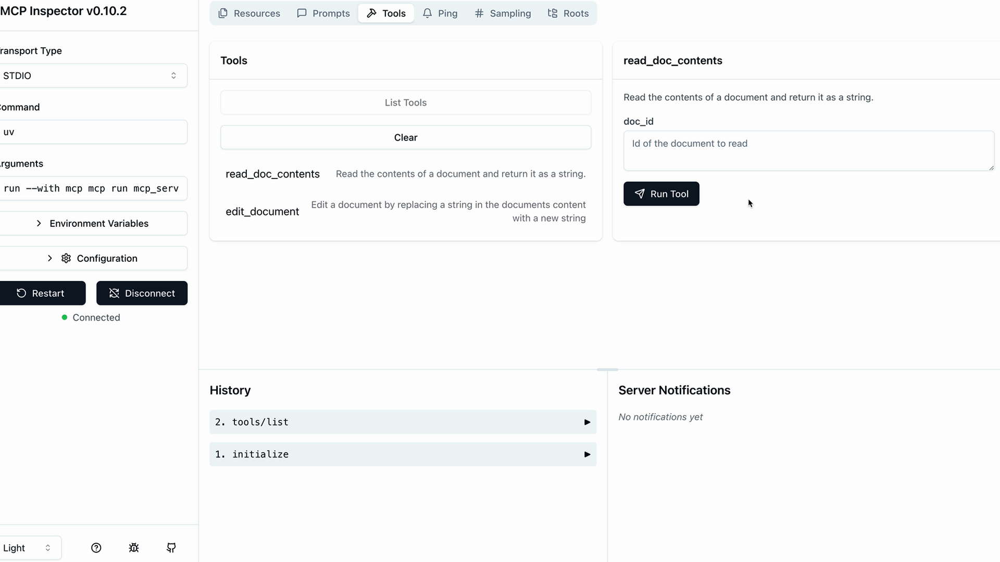

MCP Inspector
Чему научитесь
Видео 3:52 и текст урока
К концу урока вы сможете:
- запустить MCP Inspector командой
mcp devи подключить к нему свой сервер; - вызывать инструменты сервера вручную и проверять их результат;
- проверять цепочки вызовов — например, правку документа и его повторное чтение.
Видео и текст урока.
Смотреть урок на Skilljar The server inspector · 3:52Создавая MCP-серверы, нужно как-то проверять их работу без подключения к полноценному приложению. В Python MCP SDK есть встроенный инспектор, который работает в браузере: с ним сервер можно отлаживать и тестировать в реальном времени.
Запуск инспектора
Сначала убедитесь, что окружение Python активировано (точная команда — в README вашего проекта). Затем запустите инспектор:
mcp dev mcp_server.py
Команда запускает сервер разработки и выводит локальный адрес — обычно что-то вроде http://127.0.0.1:6274. Откройте этот адрес в браузере, чтобы попасть в MCP Inspector.
Работа с интерфейсом инспектора
Интерфейс инспектора активно развивается, поэтому у вас он может выглядеть иначе. Но основные возможности остаются прежними. Найдите ключевые элементы:
- кнопку Connect, которая запускает MCP-сервер;
- вкладки навигации по Resources, Tools, Prompts и другим возможностям;
- панель со списком инструментов и формой для их проверки.
Сначала нажмите кнопку Connect, чтобы инициализировать сервер. Статус подключения сменится с «Disconnected» на «Connected».
Проверка инструментов
Перейдите в раздел Tools и нажмите «List Tools» — появятся все инструменты вашего сервера. Если выбрать инструмент, на правой панели откроются сведения о нём и поля ввода.

read_doc_contents, справа — поле doc_id и кнопка «Run Tool».Например, чтобы проверить инструмент чтения документа:
- выберите инструмент
read_doc_contents; - введите ID документа (скажем, «deposition.md»);
- нажмите «Run Tool»;
- проверьте результат: вызов прошёл успешно и вернул то, что ожидалось.
Инспектор показывает и сообщение об успехе, и фактически возвращённые данные, так что легко убедиться, что инструмент работает правильно.
Проверка взаимодействия инструментов
Можно проверять несколько инструментов подряд, чтобы убедиться, что работают сложные сценарии. Например, изменив документ инструментом правки, сразу запустите инструмент чтения и проверьте, что изменения применились правильно.
Инспектор сохраняет состояние сервера между вызовами инструментов: правки не пропадают, и можно проверить всю функциональность MCP-сервера.
Процесс разработки
MCP Inspector становится неотъемлемой частью разработки. Вместо того чтобы писать отдельные тестовые скрипты или подключаться к полноценным приложениям, вы можете:
- быстро дорабатывать реализацию инструментов;
- тестировать граничные случаи и ситуации с ошибками;
- проверять взаимодействие инструментов и работу с состоянием;
- отлаживать проблемы в реальном времени.
Такая мгновенная обратная связь делает разработку MCP-серверов гораздо эффективнее и помогает находить проблемы на ранних этапах.
Дальше
Сервер готов — в следующем уроке, «Реализация клиента», мы напишем клиентскую сторону. Анкету удовлетворённости курсом, которая в оригинале идёт после этого урока, здесь пропускаем.
Оригинал урока: The server inspector.